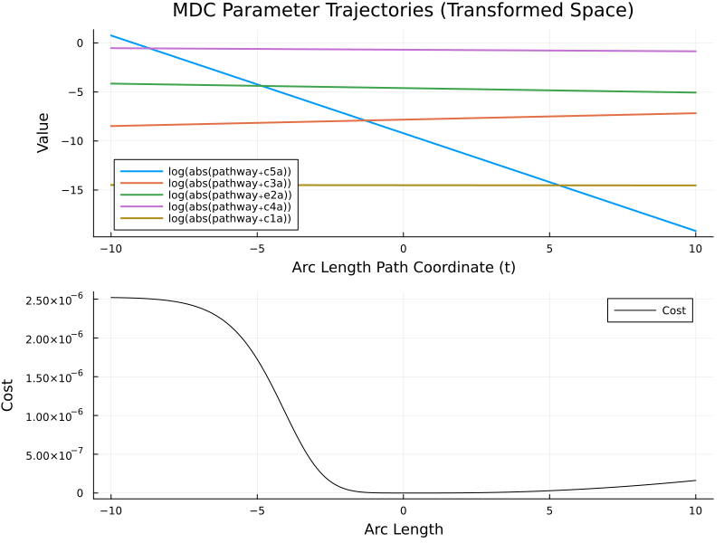
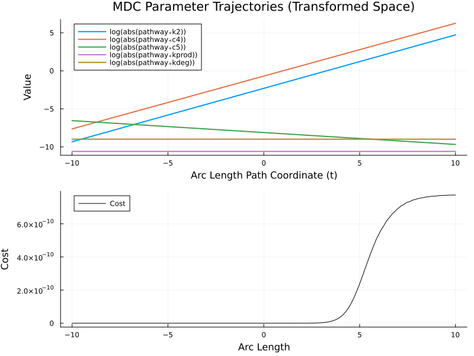
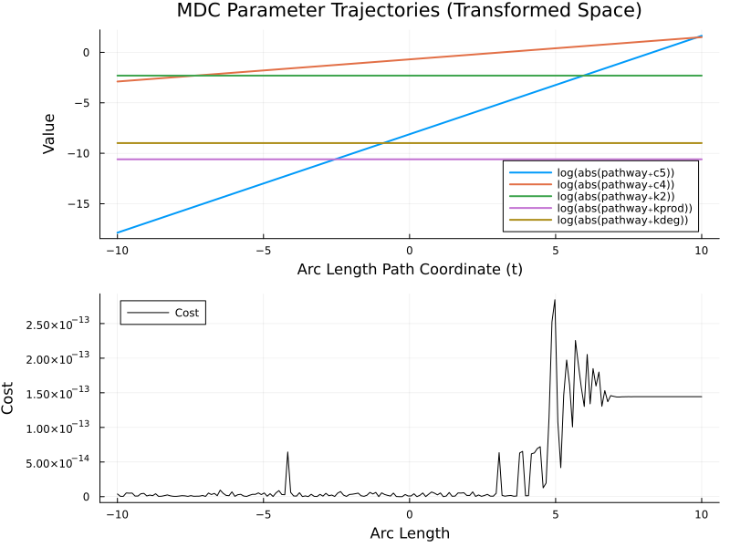
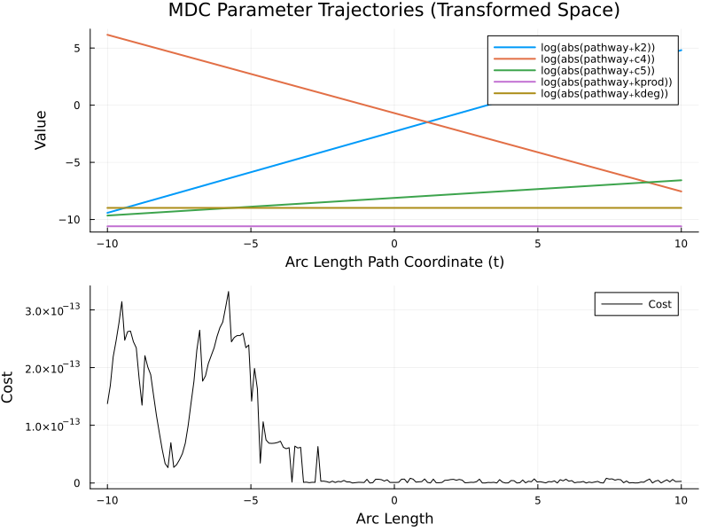
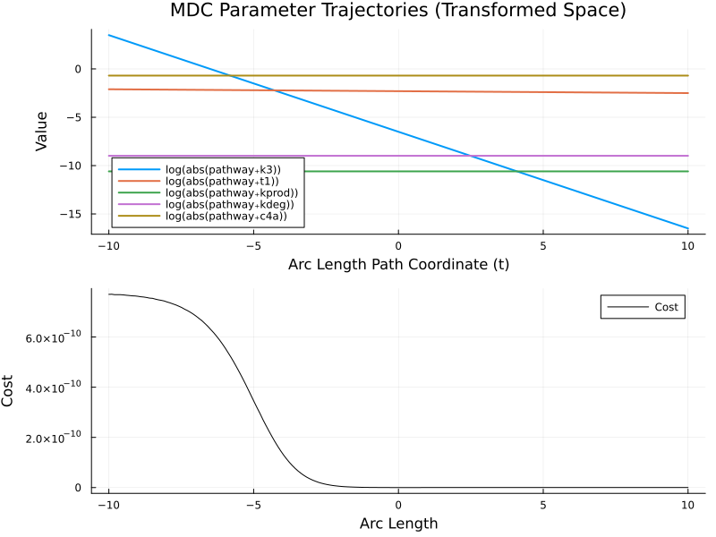

Large-Scale Demonstration: NFKB Parameter Identification
This script consolidates the complete workflow of using MinimallyDisruptiveCurves.jl on a complex biological model. We build an NFKB signaling pathway using ModelingToolkit.jl, define a simulation-based cost function, compute sparse sensitivities, and trace minimally disruptive curves through the high-dimensional parameter space. We also sparsify the parameters involved in our curves, which we haven't done previously. Curves involving fewer parameters are easier to interpret. The model is taken from: Lipniacki, Tomasz, et al. "Mathematical model of NF-κB regulatory module." Journal of theoretical biology 228.2 (2004): 195-215.
using ModelingToolkit
using ModelingToolkitStandardLibrary.Blocks
using OrdinaryDiffEq
using SciMLStructures: Tunable, canonicalize, replace
using PreallocationTools
using ForwardDiff
using MinimallyDisruptiveCurves
using ModelingToolkit: SymbolicT
using Plots
using SymbolicIndexingInterface
using SymbolicIndexingInterface: parameter_values
using SciMLBase
using LinearAlgebra1. Model Definition
We define the NFKB pathway components and connect them to a stimulatory input. The model tracks various cytoplasmic and nuclear species, exposing key observables.
const t = ModelingToolkit.t_nounits
const D = ModelingToolkit.D_nounits
@component function NFKBWithPort(; name)
@variables begin
IKKN(t) = 0.0
IKKa(t) = 0.0
IKKi(t) = 0.0
IKKaIkBa(t) = 0.0
IKKaIkBaNfKb(t) = 0.0
NFkB(t) = 0.0
NFkBn(t) = 0.0
A20(t) = 0.0
A20t(t) = 0.0
IkBa(t) = 0.0
IkBan(t) = 0.0
IkBat(t) = 0.0
IkBaNfKb(t) = 0.06
IkBaNfKbn(t) = 0.0
Cgent(t) = 0.0
NFkBn_obs(t)
IkBa_cyto_obs(t)
A20t_obs(t)
IKKtot_obs(t)
IKKa_obs(t)
IkBat_obs(t)
end
vars = SymbolicT[]
push!(vars, IKKN); push!(vars, IKKa); push!(vars, IKKi); push!(vars, IKKaIkBa)
push!(vars, IKKaIkBaNfKb); push!(vars, NFkB); push!(vars, NFkBn); push!(vars, A20)
push!(vars, A20t); push!(vars, IkBa); push!(vars, IkBan); push!(vars, IkBat)
push!(vars, IkBaNfKb); push!(vars, IkBaNfKbn); push!(vars, Cgent)
push!(vars, NFkBn_obs); push!(vars, IkBa_cyto_obs); push!(vars, A20t_obs)
push!(vars, IKKtot_obs); push!(vars, IKKa_obs); push!(vars, IkBat_obs)
@parameters begin
kprod = 2.5e-5; kdeg = 0.000125; k1 = 0.0025; k2 = 0.1; k3 = 0.0015
a1 = 0.5; a2 = 0.2; a3 = 1.0; t1 = 0.1; t2 = 0.1; c6a = 2.0e-5
i1 = 0.0025; kv = 5.0; c1 = 5.0e-7; c3 = 0.0004; c4 = 0.5
c5 = 0.0003; c4a = 0.5; c5a = 0.0001; i1a = 0.001; e1a = 0.0005
c1a = 5.0e-7; c3a = 0.0004; e2a = 0.01
c2 = 0.0, [tunable = false]
c2a = 0.0, [tunable = false]
c1c = 5.0e-7, [tunable = false]
c2c = 0.0, [tunable = false]
c3c = 0.0004, [tunable = false]
end
params = SymbolicT[]
push!(params, kprod); push!(params, kdeg); push!(params, k1); push!(params, k2); push!(params, k3)
push!(params, a1); push!(params, a2); push!(params, a3); push!(params, t1); push!(params, t2); push!(params, c6a)
push!(params, i1); push!(params, kv); push!(params, c1); push!(params, c3); push!(params, c4)
push!(params, c5); push!(params, c4a); push!(params, c5a); push!(params, i1a); push!(params, e1a)
push!(params, c1a); push!(params, c3a); push!(params, e2a); push!(params, c2); push!(params, c2a)
push!(params, c1c); push!(params, c2c); push!(params, c3c)
remf_input = RealInput(; name = :remf_input)
eqs = Equation[]
push!(eqs, D(IKKN) ~ kprod - kdeg * IKKN - k1 * IKKN * remf_input.u)
push!(eqs, D(IKKa) ~ -k3 * IKKa - kdeg * IKKa - a2 * IKKa * IkBa + t1 * IKKaIkBa - a3 * IKKa * IkBaNfKb + t2 * IKKaIkBaNfKb + (k1 * IKKN - k2 * IKKa * A20) * remf_input.u)
push!(eqs, D(IKKi) ~ k3 * IKKa - kdeg * IKKi + k2 * IKKa * A20 * remf_input.u)
push!(eqs, D(IKKaIkBa) ~ a2 * IKKa * IkBa - t1 * IKKaIkBa)
push!(eqs, D(IKKaIkBaNfKb) ~ a3 * IKKa * IkBaNfKb - t2 * IKKaIkBaNfKb)
push!(eqs, D(NFkB) ~ c6a * IkBaNfKb - a1 * NFkB * IkBa + t2 * IKKaIkBaNfKb - i1 * NFkB)
push!(eqs, D(NFkBn) ~ i1 * kv * NFkB - a1 * IkBan * NFkBn)
push!(eqs, D(A20) ~ c4 * A20t - c5 * A20)
push!(eqs, D(A20t) ~ c2 + c1 * NFkBn - c3 * A20t)
push!(eqs, D(IkBa) ~ -a2 * IKKa * IkBa - a1 * IkBa * NFkB + c4a * IkBat - c5a * IkBa - i1a * IkBa + e1a * IkBan)
push!(eqs, D(IkBan) ~ -a1 * IkBan * NFkBn + i1a * kv * IkBa - e1a * kv * IkBan)
push!(eqs, D(IkBat) ~ c2a + c1a * NFkBn - c3a * IkBat)
push!(eqs, D(IkBaNfKb) ~ a1 * IkBa * NFkB - c6a * IkBaNfKb - a3 * IKKa * IkBaNfKb + e2a * IkBaNfKbn)
push!(eqs, D(IkBaNfKbn) ~ a1 * IkBan * NFkBn - e2a * kv * IkBaNfKbn)
push!(eqs, D(Cgent) ~ c2c + c1c * NFkBn - c3c * Cgent)
push!(eqs, NFkBn_obs ~ NFkBn)
push!(eqs, IkBa_cyto_obs ~ IkBa + IkBaNfKb)
push!(eqs, A20t_obs ~ A20t)
push!(eqs, IKKtot_obs ~ IKKN + IKKa + IKKi)
push!(eqs, IKKa_obs ~ IKKa)
push!(eqs, IkBat_obs ~ IkBat)
sub_systems = System[]
push!(sub_systems, remf_input)
initial_conditions = Dict{SymbolicT, SymbolicT}()
guesses = Dict{SymbolicT, SymbolicT}()
return ODESystem(
eqs, t, vars, params;
name = name,
systems = sub_systems,
initial_conditions = initial_conditions,
guesses = guesses
)
end
@component function NetworkSystem(; name)
pathway = NFKBWithPort(; name = :pathway)
t_switch = 3600.0
steepness = 0.1
height = 1.0
eqs = Equation[]
push!(eqs, pathway.remf_input.u ~ height / (1.0 + exp(-steepness * (t - t_switch))))
sub_systems = System[]
push!(sub_systems, pathway)
return ODESystem(
eqs, t, SymbolicT[], SymbolicT[];
name = name,
systems = sub_systems,
initial_conditions = Dict{SymbolicT, SymbolicT}(),
guesses = Dict{SymbolicT, SymbolicT}()
)
end
build_nfkb() = NetworkSystem(; name = :env) |> structural_simplifybuild_nfkb (generic function with 1 method)2. Setup MTK Network & Base ODE Problem
We instantiate the system, define the time span, and generate the baseline experimental data that will serve as the target for our cost function.
sys = build_nfkb()
tspan = (0.0, 3600.0)
prob = ODEProblem(sys, [], tspan)
target_observables = [
sys.pathway.NFkBn_obs,
sys.pathway.IkBa_cyto_obs,
sys.pathway.A20t_obs,
sys.pathway.IKKtot_obs,
sys.pathway.IKKa_obs,
sys.pathway.IkBat_obs,
]6-element Vector{Symbolics.Num}:
pathway₊NFkBn_obs(t)
pathway₊IkBa_cyto_obs(t)
pathway₊A20t_obs(t)
pathway₊IKKtot_obs(t)
pathway₊IKKa_obs(t)
pathway₊IkBat_obs(t)3. Dynamic Parameter Identification
We identify the tunable parameters from the system and generate the nominal truth data.
params_to_optimize = tunable_parameters(sys) ∩ parameters(sys)
println("Natively optimizing $(length(params_to_optimize)) tunable parameters.")
timesteps = 0.0:10.0:3600.0
sol_nominal = solve(prob, Tsit5(); saveat = timesteps)
truth_data = Array(sol_nominal(timesteps, idxs = target_observables))6×361 Matrix{Float64}:
0.0 7.43739e-7 2.95022e-6 6.583e-6 … 0.00876755 0.00876064
0.06 0.059988 0.059976 0.059964 0.0601834 0.0598292
0.0 1.24095e-12 9.85548e-12 3.30328e-11 7.30558e-6 7.32014e-6
0.0 0.000249844 0.000499376 0.000748596 0.0721815 0.0721769
0.0 1.78113e-162 2.00617e-161 -6.12997e-157 0.000421263 0.000924623
0.0 1.24095e-12 9.85548e-12 3.30328e-11 … 7.30558e-6 7.32014e-64. High-Performance Loss Function
We define an allocation-friendly loss function that uses PreallocationTools and SciMLStructures to efficiently swap out parameter values and propagate Dual numbers through the ODE solver for automatic differentiation.
function loss_function(x, p_tuple)
odeprob, ts, truth, setter, diffcache, obs_symbols = p_tuple
ps = parameter_values(odeprob)
buffer = get_tmp(diffcache, x)
copyto!(buffer, canonicalize(Tunable(), ps)[1])
ps_updated = replace(Tunable(), ps, buffer)
setter(ps_updated, x)
newprob = remake(odeprob; p = ps_updated)
sol = solve(newprob, Tsit5(); saveat = ts)
if sol.retcode != SciMLBase.ReturnCode.Success
return eltype(x)(Inf)
end
current_data = sol(ts, idxs = obs_symbols)
return sum(abs2, truth .- current_data) / length(truth)
end
setter = setp(prob, params_to_optimize)
getter = getp(prob, params_to_optimize)
raw_ps = parameter_values(prob)
tunable_vector_prototype = copy(canonicalize(Tunable(), raw_ps)[1])
diffcache = DiffCache(tunable_vector_prototype)
p_tuple = (prob, timesteps, truth_data, setter, diffcache, target_observables)(ODEProblem{Vector{Float64}, Tuple{Float64, Float64}, true, ModelingToolkitBase.MTKParameters{Vector{Float64}, Vector{Float64}, Tuple{}, Tuple{Vector{Float64}}, Tuple{}, Tuple{}}, SciMLBase.ODEFunction{true, SciMLBase.AutoSpecialize, ModelingToolkitBase.GeneratedFunctionWrapper{(2, 3, true), RuntimeGeneratedFunctions.RuntimeGeneratedFunction{(:___mtkunknowns___, :___mtkparameters___, :__argₛᵧₘ1249670312406203976), ModelingToolkitBase.var"#_RGF_ModTag", ModelingToolkitBase.var"#_RGF_ModTag", (0x4e7b51f0, 0x051ec84e, 0x9ae3e1f2, 0x914de272, 0x509838d5), Nothing}, RuntimeGeneratedFunctions.RuntimeGeneratedFunction{(:__argₛᵧₘ1401282876548370056, :___mtkunknowns___, :___mtkparameters___, :__argₛᵧₘ1249670312406203976), ModelingToolkitBase.var"#_RGF_ModTag", ModelingToolkitBase.var"#_RGF_ModTag", (0x8eed317e, 0x8673a867, 0x35cd6741, 0xb3493881, 0xcae76ca2), Nothing}}, LinearAlgebra.UniformScaling{Bool}, Nothing, Nothing, Nothing, Nothing, Nothing, Nothing, Nothing, Nothing, Nothing, Nothing, Nothing, Nothing, ModelingToolkitBase.ObservedFunctionCache{ModelingToolkitBase.System, Nothing}, Nothing, ModelingToolkitBase.System, Union{Nothing, SciMLBase.OverrideInitData}, Union{Nothing, SciMLBase.ODENLStepData}}, Base.Pairs{Symbol, Union{}, Nothing, @NamedTuple{}}, SciMLBase.StandardODEProblem}(SciMLBase.ODEFunction{true, SciMLBase.AutoSpecialize, ModelingToolkitBase.GeneratedFunctionWrapper{(2, 3, true), RuntimeGeneratedFunctions.RuntimeGeneratedFunction{(:___mtkunknowns___, :___mtkparameters___, :__argₛᵧₘ1249670312406203976), ModelingToolkitBase.var"#_RGF_ModTag", ModelingToolkitBase.var"#_RGF_ModTag", (0x4e7b51f0, 0x051ec84e, 0x9ae3e1f2, 0x914de272, 0x509838d5), Nothing}, RuntimeGeneratedFunctions.RuntimeGeneratedFunction{(:__argₛᵧₘ1401282876548370056, :___mtkunknowns___, :___mtkparameters___, :__argₛᵧₘ1249670312406203976), ModelingToolkitBase.var"#_RGF_ModTag", ModelingToolkitBase.var"#_RGF_ModTag", (0x8eed317e, 0x8673a867, 0x35cd6741, 0xb3493881, 0xcae76ca2), Nothing}}, LinearAlgebra.UniformScaling{Bool}, Nothing, Nothing, Nothing, Nothing, Nothing, Nothing, Nothing, Nothing, Nothing, Nothing, Nothing, Nothing, ModelingToolkitBase.ObservedFunctionCache{ModelingToolkitBase.System, Nothing}, Nothing, ModelingToolkitBase.System, Union{Nothing, SciMLBase.OverrideInitData}, Union{Nothing, SciMLBase.ODENLStepData}}(ModelingToolkitBase.GeneratedFunctionWrapper{(2, 3, true), RuntimeGeneratedFunctions.RuntimeGeneratedFunction{(:___mtkunknowns___, :___mtkparameters___, :__argₛᵧₘ1249670312406203976), ModelingToolkitBase.var"#_RGF_ModTag", ModelingToolkitBase.var"#_RGF_ModTag", (0x4e7b51f0, 0x051ec84e, 0x9ae3e1f2, 0x914de272, 0x509838d5), Nothing}, RuntimeGeneratedFunctions.RuntimeGeneratedFunction{(:__argₛᵧₘ1401282876548370056, :___mtkunknowns___, :___mtkparameters___, :__argₛᵧₘ1249670312406203976), ModelingToolkitBase.var"#_RGF_ModTag", ModelingToolkitBase.var"#_RGF_ModTag", (0x8eed317e, 0x8673a867, 0x35cd6741, 0xb3493881, 0xcae76ca2), Nothing}}(RuntimeGeneratedFunctions.RuntimeGeneratedFunction{(:___mtkunknowns___, :___mtkparameters___, :__argₛᵧₘ1249670312406203976), ModelingToolkitBase.var"#_RGF_ModTag", ModelingToolkitBase.var"#_RGF_ModTag", (0x4e7b51f0, 0x051ec84e, 0x9ae3e1f2, 0x914de272, 0x509838d5), Nothing}(nothing), RuntimeGeneratedFunctions.RuntimeGeneratedFunction{(:__argₛᵧₘ1401282876548370056, :___mtkunknowns___, :___mtkparameters___, :__argₛᵧₘ1249670312406203976), ModelingToolkitBase.var"#_RGF_ModTag", ModelingToolkitBase.var"#_RGF_ModTag", (0x8eed317e, 0x8673a867, 0x35cd6741, 0xb3493881, 0xcae76ca2), Nothing}(nothing)), LinearAlgebra.UniformScaling{Bool}(true), nothing, nothing, nothing, nothing, nothing, nothing, nothing, nothing, nothing, nothing, nothing, nothing, ModelingToolkitBase.ObservedFunctionCache{ModelingToolkitBase.System, Nothing}(Model env:
Equations (15):
15 standard: see equations(env)
Unknowns (15): see unknowns(env)
pathway₊NFkBn(t)
pathway₊NFkB(t)
pathway₊IkBat(t)
pathway₊IkBan(t)
⋮
Parameters (29): see parameters(env)
pathway₊kprod
pathway₊kdeg
pathway₊k1
pathway₊k2
⋮
Observed (7): see observed(env), Dict{Any, Any}(Symbolics.Num[pathway₊NFkBn_obs(t), pathway₊IkBa_cyto_obs(t), pathway₊A20t_obs(t), pathway₊IKKtot_obs(t), pathway₊IKKa_obs(t), pathway₊IkBat_obs(t)] => ModelingToolkitBase.GeneratedFunctionWrapper{(2, 3, true), RuntimeGeneratedFunctions.RuntimeGeneratedFunction{(:__mtk_arg_1, :___mtkparameters___, :__argₛᵧₘ1249670312406203976), ModelingToolkitBase.var"#_RGF_ModTag", ModelingToolkitBase.var"#_RGF_ModTag", (0xa7c44019, 0xee9878cd, 0x7aeff87d, 0x09506ebe, 0x9d4c62e8), Nothing}, RuntimeGeneratedFunctions.RuntimeGeneratedFunction{(:__argₛᵧₘ1401282876548370056, :__mtk_arg_1, :___mtkparameters___, :__argₛᵧₘ1249670312406203976), ModelingToolkitBase.var"#_RGF_ModTag", ModelingToolkitBase.var"#_RGF_ModTag", (0xee60db62, 0x6fde7ccd, 0x64afb629, 0x11bfdcb3, 0xe2d9f827), Nothing}}(RuntimeGeneratedFunctions.RuntimeGeneratedFunction{(:__mtk_arg_1, :___mtkparameters___, :__argₛᵧₘ1249670312406203976), ModelingToolkitBase.var"#_RGF_ModTag", ModelingToolkitBase.var"#_RGF_ModTag", (0xa7c44019, 0xee9878cd, 0x7aeff87d, 0x09506ebe, 0x9d4c62e8), Nothing}(nothing), RuntimeGeneratedFunctions.RuntimeGeneratedFunction{(:__argₛᵧₘ1401282876548370056, :__mtk_arg_1, :___mtkparameters___, :__argₛᵧₘ1249670312406203976), ModelingToolkitBase.var"#_RGF_ModTag", ModelingToolkitBase.var"#_RGF_ModTag", (0xee60db62, 0x6fde7ccd, 0x64afb629, 0x11bfdcb3, 0xe2d9f827), Nothing}(nothing))), false, false, ModelingToolkitBase, false, true, nothing), nothing, Model env:
Equations (15):
15 standard: see equations(env)
Unknowns (15): see unknowns(env)
pathway₊NFkBn(t)
pathway₊NFkB(t)
pathway₊IkBat(t)
pathway₊IkBan(t)
⋮
Parameters (29): see parameters(env)
pathway₊kprod
pathway₊kdeg
pathway₊k1
pathway₊k2
⋮
Observed (7): see observed(env), SciMLBase.OverrideInitData{SciMLBase.NonlinearProblem{Nothing, true, ModelingToolkitBase.MTKParameters{Vector{Float64}, StaticArraysCore.SVector{0, Float64}, Tuple{}, Tuple{Vector{Float64}}, Tuple{}, Tuple{}}, SciMLBase.NonlinearFunction{true, SciMLBase.AutoSpecialize, ModelingToolkitBase.GeneratedFunctionWrapper{(2, 2, true), RuntimeGeneratedFunctions.RuntimeGeneratedFunction{(:___mtkunknowns___, :___mtkparameters___), ModelingToolkitBase.var"#_RGF_ModTag", ModelingToolkitBase.var"#_RGF_ModTag", (0x8a08417e, 0x1cf5ba56, 0xfbd77c33, 0x3fb0dbc6, 0x82eb46c2), Nothing}, RuntimeGeneratedFunctions.RuntimeGeneratedFunction{(:__argₛᵧₘ1401282876548370056, :___mtkunknowns___, :___mtkparameters___), ModelingToolkitBase.var"#_RGF_ModTag", ModelingToolkitBase.var"#_RGF_ModTag", (0xb4608f11, 0x5d8d64f6, 0xd9aa7bac, 0xd5e644ed, 0x4b6837b0), Nothing}}, LinearAlgebra.UniformScaling{Bool}, Nothing, Nothing, Nothing, Nothing, Nothing, Nothing, Nothing, Nothing, Nothing, Nothing, ModelingToolkitBase.ObservedFunctionCache{ModelingToolkitBase.System, Nothing}, Nothing, ModelingToolkitBase.System, Nothing, Nothing}, Base.Pairs{Symbol, Union{}, Nothing, @NamedTuple{}}, SciMLBase.StandardNonlinearProblem, Nothing, Nothing}, typeof(ModelingToolkitBase.update_initializeprob!), ComposedFunction{typeof(ModelingToolkitBase.__iip_u0_ad_wrapper), ComposedFunction{typeof(identity), ModelingToolkitBase.PromoteToTunableEltype{ModelingToolkitBase.CopyParamsByTemplate{true, Vector{ModelingToolkitBase.ParameterIndex{SciMLStructures.Tunable, UnitRange{Int64}}}, 1, Nothing}, Float64}}}, ModelingToolkitBase.var"#initprobpmap_split#778"{ModelingToolkitBase.MTKParametersReconstructor{ComposedFunction{ModelingToolkitBase.PConstructorApplicator{typeof(identity)}, ModelingToolkitBase.CopyParamsByTemplate{true, Tuple{ModelingToolkitBase.ParameterIndex{SciMLStructures.Tunable, UnitRange{Int64}}}, 1, Nothing}}, ComposedFunction{ModelingToolkitBase.PConstructorApplicator{typeof(identity)}, ModelingToolkitBase.CopyParamsByTemplate{true, Tuple{ModelingToolkitBase.ParameterIndex{SciMLStructures.Tunable, UnitRange{Int64}}}, 1, Nothing}}, Returns{Tuple{}}, ComposedFunction{ComposedFunction{Base.Fix1{typeof(broadcast), ModelingToolkitBase.PConstructorApplicator{typeof(identity)}}, Type{Tuple}}, ModelingToolkitBase.CopyParamsByTemplate{false, Tuple{ModelingToolkitBase.CopyParamsByTemplate{true, Tuple{ModelingToolkitBase.StaticBufferIndex{SciMLStructures.Constants, 1}}, 1, Nothing}}, 1, Nothing}}, Returns{Tuple{}}}}, ModelingToolkitBase.InitializationMetadata{ModelingToolkitBase.ReconstructInitializeprob{ModelingToolkitBase.MTKParametersReconstructor{ComposedFunction{ModelingToolkitBase.PConstructorApplicator{typeof(identity)}, ModelingToolkitBase.CopyParamsByTemplate{true, Tuple{ModelingToolkitBase.IndepVarTemplate, ModelingToolkitBase.ParameterIndex{SciMLStructures.Tunable, UnitRange{Int64}}, ModelingToolkitBase.ParameterIndex{SciMLStructures.Initials, UnitRange{Int64}}}, 1, Nothing}}, Returns{StaticArraysCore.SVector{0, Float64}}, Returns{Tuple{}}, ComposedFunction{ComposedFunction{Base.Fix1{typeof(broadcast), ModelingToolkitBase.PConstructorApplicator{typeof(identity)}}, Type{Tuple}}, ModelingToolkitBase.CopyParamsByTemplate{false, Tuple{ModelingToolkitBase.CopyParamsByTemplate{true, Tuple{ModelingToolkitBase.StaticBufferIndex{SciMLStructures.Constants, 1}}, 1, Nothing}}, 1, Nothing}}, Returns{Tuple{}}}, ComposedFunction{typeof(identity), ModelingToolkitBase.ObservedWrapper{true, ModelingToolkitBase.GeneratedFunctionWrapper{(2, 3, true), RuntimeGeneratedFunctions.RuntimeGeneratedFunction{(:__mtk_arg_1, :___mtkparameters___, :__argₛᵧₘ1249670312406203976), ModelingToolkitBase.var"#_RGF_ModTag", ModelingToolkitBase.var"#_RGF_ModTag", (0xb576634a, 0xc2a99b18, 0xdfd7a060, 0x0b4099b3, 0xbe1875d5), Nothing}, RuntimeGeneratedFunctions.RuntimeGeneratedFunction{(:x1, :x2, :x3, :x4), ModelingToolkitBase.var"#_RGF_ModTag", ModelingToolkitBase.var"#_RGF_ModTag", (0xb896e553, 0xa118fcf5, 0xbfeb9719, 0xa096e58a, 0x357542a4), Nothing}}}}}, ModelingToolkitBase.GetUpdatedU0{Nothing, SymbolicIndexingInterface.MultipleParametersGetter{SymbolicIndexingInterface.IndexerNotTimeseries, Vector{SymbolicIndexingInterface.GetParameterIndex{ModelingToolkitBase.ParameterIndex{SciMLStructures.Initials, Int64}}}, Nothing}}, ModelingToolkitBase.SetInitialUnknowns{SymbolicIndexingInterface.MultipleSetters{Vector{SymbolicIndexingInterface.ParameterHookWrapper{SymbolicIndexingInterface.SetParameterIndex{ModelingToolkitBase.ParameterIndex{SciMLStructures.Initials, Int64}}, SymbolicUtils.BasicSymbolicImpl.var"typeof(BasicSymbolicImpl)"{SymbolicUtils.SymReal}}}}}}, Val{true}}(SciMLBase.NonlinearProblem{Nothing, true, ModelingToolkitBase.MTKParameters{Vector{Float64}, StaticArraysCore.SVector{0, Float64}, Tuple{}, Tuple{Vector{Float64}}, Tuple{}, Tuple{}}, SciMLBase.NonlinearFunction{true, SciMLBase.AutoSpecialize, ModelingToolkitBase.GeneratedFunctionWrapper{(2, 2, true), RuntimeGeneratedFunctions.RuntimeGeneratedFunction{(:___mtkunknowns___, :___mtkparameters___), ModelingToolkitBase.var"#_RGF_ModTag", ModelingToolkitBase.var"#_RGF_ModTag", (0x8a08417e, 0x1cf5ba56, 0xfbd77c33, 0x3fb0dbc6, 0x82eb46c2), Nothing}, RuntimeGeneratedFunctions.RuntimeGeneratedFunction{(:__argₛᵧₘ1401282876548370056, :___mtkunknowns___, :___mtkparameters___), ModelingToolkitBase.var"#_RGF_ModTag", ModelingToolkitBase.var"#_RGF_ModTag", (0xb4608f11, 0x5d8d64f6, 0xd9aa7bac, 0xd5e644ed, 0x4b6837b0), Nothing}}, LinearAlgebra.UniformScaling{Bool}, Nothing, Nothing, Nothing, Nothing, Nothing, Nothing, Nothing, Nothing, Nothing, Nothing, ModelingToolkitBase.ObservedFunctionCache{ModelingToolkitBase.System, Nothing}, Nothing, ModelingToolkitBase.System, Nothing, Nothing}, Base.Pairs{Symbol, Union{}, Nothing, @NamedTuple{}}, SciMLBase.StandardNonlinearProblem, Nothing, Nothing}(SciMLBase.NonlinearFunction{true, SciMLBase.AutoSpecialize, ModelingToolkitBase.GeneratedFunctionWrapper{(2, 2, true), RuntimeGeneratedFunctions.RuntimeGeneratedFunction{(:___mtkunknowns___, :___mtkparameters___), ModelingToolkitBase.var"#_RGF_ModTag", ModelingToolkitBase.var"#_RGF_ModTag", (0x8a08417e, 0x1cf5ba56, 0xfbd77c33, 0x3fb0dbc6, 0x82eb46c2), Nothing}, RuntimeGeneratedFunctions.RuntimeGeneratedFunction{(:__argₛᵧₘ1401282876548370056, :___mtkunknowns___, :___mtkparameters___), ModelingToolkitBase.var"#_RGF_ModTag", ModelingToolkitBase.var"#_RGF_ModTag", (0xb4608f11, 0x5d8d64f6, 0xd9aa7bac, 0xd5e644ed, 0x4b6837b0), Nothing}}, LinearAlgebra.UniformScaling{Bool}, Nothing, Nothing, Nothing, Nothing, Nothing, Nothing, Nothing, Nothing, Nothing, Nothing, ModelingToolkitBase.ObservedFunctionCache{ModelingToolkitBase.System, Nothing}, Nothing, ModelingToolkitBase.System, Nothing, Nothing}(ModelingToolkitBase.GeneratedFunctionWrapper{(2, 2, true), RuntimeGeneratedFunctions.RuntimeGeneratedFunction{(:___mtkunknowns___, :___mtkparameters___), ModelingToolkitBase.var"#_RGF_ModTag", ModelingToolkitBase.var"#_RGF_ModTag", (0x8a08417e, 0x1cf5ba56, 0xfbd77c33, 0x3fb0dbc6, 0x82eb46c2), Nothing}, RuntimeGeneratedFunctions.RuntimeGeneratedFunction{(:__argₛᵧₘ1401282876548370056, :___mtkunknowns___, :___mtkparameters___), ModelingToolkitBase.var"#_RGF_ModTag", ModelingToolkitBase.var"#_RGF_ModTag", (0xb4608f11, 0x5d8d64f6, 0xd9aa7bac, 0xd5e644ed, 0x4b6837b0), Nothing}}(RuntimeGeneratedFunctions.RuntimeGeneratedFunction{(:___mtkunknowns___, :___mtkparameters___), ModelingToolkitBase.var"#_RGF_ModTag", ModelingToolkitBase.var"#_RGF_ModTag", (0x8a08417e, 0x1cf5ba56, 0xfbd77c33, 0x3fb0dbc6, 0x82eb46c2), Nothing}(nothing), RuntimeGeneratedFunctions.RuntimeGeneratedFunction{(:__argₛᵧₘ1401282876548370056, :___mtkunknowns___, :___mtkparameters___), ModelingToolkitBase.var"#_RGF_ModTag", ModelingToolkitBase.var"#_RGF_ModTag", (0xb4608f11, 0x5d8d64f6, 0xd9aa7bac, 0xd5e644ed, 0x4b6837b0), Nothing}(nothing)), LinearAlgebra.UniformScaling{Bool}(true), nothing, nothing, nothing, nothing, nothing, nothing, nothing, nothing, nothing, nothing, ModelingToolkitBase.ObservedFunctionCache{ModelingToolkitBase.System, Nothing}(Model env:
Parameters (74): see parameters(env)
t
pathway₊kprod
pathway₊kdeg
pathway₊k1
⋮
Observed (30): see observed(env), Dict{Any, Any}(), false, false, ModelingToolkitBase, false, true, nothing), nothing, Model env:
Parameters (74): see parameters(env)
t
pathway₊kprod
pathway₊kdeg
pathway₊k1
⋮
Observed (30): see observed(env), nothing, nothing), nothing, ModelingToolkitBase.MTKParameters{Vector{Float64}, StaticArraysCore.SVector{0, Float64}, Tuple{}, Tuple{Vector{Float64}}, Tuple{}, Tuple{}}([0.0, 2.5e-5, 0.000125, 0.0025, 0.1, 0.0015, 0.5, 0.2, 1.0, 0.1 … 0.0, 0.0, 0.0, 0.0, 0.0, 0.0, 0.0, 0.0, 0.0, 0.0], Float64[], (), ([0.0, 0.0, 0.0, 0.0004, 5.0e-7],), (), ()), SciMLBase.StandardNonlinearProblem(), nothing, nothing, Base.Pairs{Symbol, Union{}, Nothing, @NamedTuple{}}()), ModelingToolkitBase.update_initializeprob!, ModelingToolkitBase.__iip_u0_ad_wrapper ∘ (identity ∘ ModelingToolkitBase.PromoteToTunableEltype{ModelingToolkitBase.CopyParamsByTemplate{true, Vector{ModelingToolkitBase.ParameterIndex{SciMLStructures.Tunable, UnitRange{Int64}}}, 1, Nothing}, Float64}(ModelingToolkitBase.CopyParamsByTemplate{true, Vector{ModelingToolkitBase.ParameterIndex{SciMLStructures.Tunable, UnitRange{Int64}}}, 1, Nothing}(ModelingToolkitBase.ParameterIndex{SciMLStructures.Tunable, UnitRange{Int64}}[ModelingToolkitBase.ParameterIndex{SciMLStructures.Tunable, UnitRange{Int64}}(SciMLStructures.Tunable(), 28:28, false), ModelingToolkitBase.ParameterIndex{SciMLStructures.Tunable, UnitRange{Int64}}(SciMLStructures.Tunable(), 38:38, false), ModelingToolkitBase.ParameterIndex{SciMLStructures.Tunable, UnitRange{Int64}}(SciMLStructures.Tunable(), 41:41, false), ModelingToolkitBase.ParameterIndex{SciMLStructures.Tunable, UnitRange{Int64}}(SciMLStructures.Tunable(), 27:27, false), ModelingToolkitBase.ParameterIndex{SciMLStructures.Tunable, UnitRange{Int64}}(SciMLStructures.Tunable(), 37:37, false), ModelingToolkitBase.ParameterIndex{SciMLStructures.Tunable, UnitRange{Int64}}(SciMLStructures.Tunable(), 44:44, false), ModelingToolkitBase.ParameterIndex{SciMLStructures.Tunable, UnitRange{Int64}}(SciMLStructures.Tunable(), 43:43, false), ModelingToolkitBase.ParameterIndex{SciMLStructures.Tunable, UnitRange{Int64}}(SciMLStructures.Tunable(), 45:45, false), ModelingToolkitBase.ParameterIndex{SciMLStructures.Tunable, UnitRange{Int64}}(SciMLStructures.Tunable(), 42:42, false), ModelingToolkitBase.ParameterIndex{SciMLStructures.Tunable, UnitRange{Int64}}(SciMLStructures.Tunable(), 57:57, false), ModelingToolkitBase.ParameterIndex{SciMLStructures.Tunable, UnitRange{Int64}}(SciMLStructures.Tunable(), 33:33, false), ModelingToolkitBase.ParameterIndex{SciMLStructures.Tunable, UnitRange{Int64}}(SciMLStructures.Tunable(), 40:40, false), ModelingToolkitBase.ParameterIndex{SciMLStructures.Tunable, UnitRange{Int64}}(SciMLStructures.Tunable(), 29:29, false), ModelingToolkitBase.ParameterIndex{SciMLStructures.Tunable, UnitRange{Int64}}(SciMLStructures.Tunable(), 65:65, false), ModelingToolkitBase.ParameterIndex{SciMLStructures.Tunable, UnitRange{Int64}}(SciMLStructures.Tunable(), 46:46, false)], (15,), nothing))), ModelingToolkitBase.var"#initprobpmap_split#778"{ModelingToolkitBase.MTKParametersReconstructor{ComposedFunction{ModelingToolkitBase.PConstructorApplicator{typeof(identity)}, ModelingToolkitBase.CopyParamsByTemplate{true, Tuple{ModelingToolkitBase.ParameterIndex{SciMLStructures.Tunable, UnitRange{Int64}}}, 1, Nothing}}, ComposedFunction{ModelingToolkitBase.PConstructorApplicator{typeof(identity)}, ModelingToolkitBase.CopyParamsByTemplate{true, Tuple{ModelingToolkitBase.ParameterIndex{SciMLStructures.Tunable, UnitRange{Int64}}}, 1, Nothing}}, Returns{Tuple{}}, ComposedFunction{ComposedFunction{Base.Fix1{typeof(broadcast), ModelingToolkitBase.PConstructorApplicator{typeof(identity)}}, Type{Tuple}}, ModelingToolkitBase.CopyParamsByTemplate{false, Tuple{ModelingToolkitBase.CopyParamsByTemplate{true, Tuple{ModelingToolkitBase.StaticBufferIndex{SciMLStructures.Constants, 1}}, 1, Nothing}}, 1, Nothing}}, Returns{Tuple{}}}}(ModelingToolkitBase.MTKParametersReconstructor{ComposedFunction{ModelingToolkitBase.PConstructorApplicator{typeof(identity)}, ModelingToolkitBase.CopyParamsByTemplate{true, Tuple{ModelingToolkitBase.ParameterIndex{SciMLStructures.Tunable, UnitRange{Int64}}}, 1, Nothing}}, ComposedFunction{ModelingToolkitBase.PConstructorApplicator{typeof(identity)}, ModelingToolkitBase.CopyParamsByTemplate{true, Tuple{ModelingToolkitBase.ParameterIndex{SciMLStructures.Tunable, UnitRange{Int64}}}, 1, Nothing}}, Returns{Tuple{}}, ComposedFunction{ComposedFunction{Base.Fix1{typeof(broadcast), ModelingToolkitBase.PConstructorApplicator{typeof(identity)}}, Type{Tuple}}, ModelingToolkitBase.CopyParamsByTemplate{false, Tuple{ModelingToolkitBase.CopyParamsByTemplate{true, Tuple{ModelingToolkitBase.StaticBufferIndex{SciMLStructures.Constants, 1}}, 1, Nothing}}, 1, Nothing}}, Returns{Tuple{}}}(ModelingToolkitBase.PConstructorApplicator{typeof(identity)}(identity) ∘ ModelingToolkitBase.CopyParamsByTemplate{true, Tuple{ModelingToolkitBase.ParameterIndex{SciMLStructures.Tunable, UnitRange{Int64}}}, 1, Nothing}((ModelingToolkitBase.ParameterIndex{SciMLStructures.Tunable, UnitRange{Int64}}(SciMLStructures.Tunable(), 2:25, false),), (24,), nothing), ModelingToolkitBase.PConstructorApplicator{typeof(identity)}(identity) ∘ ModelingToolkitBase.CopyParamsByTemplate{true, Tuple{ModelingToolkitBase.ParameterIndex{SciMLStructures.Tunable, UnitRange{Int64}}}, 1, Nothing}((ModelingToolkitBase.ParameterIndex{SciMLStructures.Tunable, UnitRange{Int64}}(SciMLStructures.Tunable(), 26:69, false),), (44,), nothing), Returns{Tuple{}}(()), Base.Fix1{typeof(broadcast), ModelingToolkitBase.PConstructorApplicator{typeof(identity)}}(broadcast, ModelingToolkitBase.PConstructorApplicator{typeof(identity)}(identity)) ∘ Tuple ∘ ModelingToolkitBase.CopyParamsByTemplate{false, Tuple{ModelingToolkitBase.CopyParamsByTemplate{true, Tuple{ModelingToolkitBase.StaticBufferIndex{SciMLStructures.Constants, 1}}, 1, Nothing}}, 1, Nothing}((ModelingToolkitBase.CopyParamsByTemplate{true, Tuple{ModelingToolkitBase.StaticBufferIndex{SciMLStructures.Constants, 1}}, 1, Nothing}((ModelingToolkitBase.StaticBufferIndex{SciMLStructures.Constants, 1}(1:5),), (5,), nothing),), (1,), nothing), Returns{Tuple{}}(()), 0)), ModelingToolkitBase.InitializationMetadata{ModelingToolkitBase.ReconstructInitializeprob{ModelingToolkitBase.MTKParametersReconstructor{ComposedFunction{ModelingToolkitBase.PConstructorApplicator{typeof(identity)}, ModelingToolkitBase.CopyParamsByTemplate{true, Tuple{ModelingToolkitBase.IndepVarTemplate, ModelingToolkitBase.ParameterIndex{SciMLStructures.Tunable, UnitRange{Int64}}, ModelingToolkitBase.ParameterIndex{SciMLStructures.Initials, UnitRange{Int64}}}, 1, Nothing}}, Returns{StaticArraysCore.SVector{0, Float64}}, Returns{Tuple{}}, ComposedFunction{ComposedFunction{Base.Fix1{typeof(broadcast), ModelingToolkitBase.PConstructorApplicator{typeof(identity)}}, Type{Tuple}}, ModelingToolkitBase.CopyParamsByTemplate{false, Tuple{ModelingToolkitBase.CopyParamsByTemplate{true, Tuple{ModelingToolkitBase.StaticBufferIndex{SciMLStructures.Constants, 1}}, 1, Nothing}}, 1, Nothing}}, Returns{Tuple{}}}, ComposedFunction{typeof(identity), ModelingToolkitBase.ObservedWrapper{true, ModelingToolkitBase.GeneratedFunctionWrapper{(2, 3, true), RuntimeGeneratedFunctions.RuntimeGeneratedFunction{(:__mtk_arg_1, :___mtkparameters___, :__argₛᵧₘ1249670312406203976), ModelingToolkitBase.var"#_RGF_ModTag", ModelingToolkitBase.var"#_RGF_ModTag", (0xb576634a, 0xc2a99b18, 0xdfd7a060, 0x0b4099b3, 0xbe1875d5), Nothing}, RuntimeGeneratedFunctions.RuntimeGeneratedFunction{(:x1, :x2, :x3, :x4), ModelingToolkitBase.var"#_RGF_ModTag", ModelingToolkitBase.var"#_RGF_ModTag", (0xb896e553, 0xa118fcf5, 0xbfeb9719, 0xa096e58a, 0x357542a4), Nothing}}}}}, ModelingToolkitBase.GetUpdatedU0{Nothing, SymbolicIndexingInterface.MultipleParametersGetter{SymbolicIndexingInterface.IndexerNotTimeseries, Vector{SymbolicIndexingInterface.GetParameterIndex{ModelingToolkitBase.ParameterIndex{SciMLStructures.Initials, Int64}}}, Nothing}}, ModelingToolkitBase.SetInitialUnknowns{SymbolicIndexingInterface.MultipleSetters{Vector{SymbolicIndexingInterface.ParameterHookWrapper{SymbolicIndexingInterface.SetParameterIndex{ModelingToolkitBase.ParameterIndex{SciMLStructures.Initials, Int64}}, SymbolicUtils.BasicSymbolicImpl.var"typeof(BasicSymbolicImpl)"{SymbolicUtils.SymReal}}}}}}(ModelingToolkitBase.AtomicArrayDict{SymbolicUtils.BasicSymbolicImpl.var"typeof(BasicSymbolicImpl)"{SymbolicUtils.SymReal}, Dict{SymbolicUtils.BasicSymbolicImpl.var"typeof(BasicSymbolicImpl)"{SymbolicUtils.SymReal}, SymbolicUtils.BasicSymbolicImpl.var"typeof(BasicSymbolicImpl)"{SymbolicUtils.SymReal}}}(Initial(pathway₊A20t_obs(t)) => false, pathway₊IkBan(t) => 0.0, pathway₊NFkBn(t) => 0.0, pathway₊Cgent(t) => 0.0, pathway₊c1c => 5.0e-7, pathway₊e2a => 0.01, pathway₊c5 => 0.0003, pathway₊k3 => 0.0015, Initial(pathway₊Cgent(t)) => false, pathway₊e1a => 0.0005…), ModelingToolkitBase.AtomicArrayDict{SymbolicUtils.BasicSymbolicImpl.var"typeof(BasicSymbolicImpl)"{SymbolicUtils.SymReal}, Dict{SymbolicUtils.BasicSymbolicImpl.var"typeof(BasicSymbolicImpl)"{SymbolicUtils.SymReal}, SymbolicUtils.BasicSymbolicImpl.var"typeof(BasicSymbolicImpl)"{SymbolicUtils.SymReal}}}(pathway₊remf_input₊u(t) => 0.0), Symbolics.Equation[], true, true, ModelingToolkitBase.ReconstructInitializeprob{ModelingToolkitBase.MTKParametersReconstructor{ComposedFunction{ModelingToolkitBase.PConstructorApplicator{typeof(identity)}, ModelingToolkitBase.CopyParamsByTemplate{true, Tuple{ModelingToolkitBase.IndepVarTemplate, ModelingToolkitBase.ParameterIndex{SciMLStructures.Tunable, UnitRange{Int64}}, ModelingToolkitBase.ParameterIndex{SciMLStructures.Initials, UnitRange{Int64}}}, 1, Nothing}}, Returns{StaticArraysCore.SVector{0, Float64}}, Returns{Tuple{}}, ComposedFunction{ComposedFunction{Base.Fix1{typeof(broadcast), ModelingToolkitBase.PConstructorApplicator{typeof(identity)}}, Type{Tuple}}, ModelingToolkitBase.CopyParamsByTemplate{false, Tuple{ModelingToolkitBase.CopyParamsByTemplate{true, Tuple{ModelingToolkitBase.StaticBufferIndex{SciMLStructures.Constants, 1}}, 1, Nothing}}, 1, Nothing}}, Returns{Tuple{}}}, ComposedFunction{typeof(identity), ModelingToolkitBase.ObservedWrapper{true, ModelingToolkitBase.GeneratedFunctionWrapper{(2, 3, true), RuntimeGeneratedFunctions.RuntimeGeneratedFunction{(:__mtk_arg_1, :___mtkparameters___, :__argₛᵧₘ1249670312406203976), ModelingToolkitBase.var"#_RGF_ModTag", ModelingToolkitBase.var"#_RGF_ModTag", (0xb576634a, 0xc2a99b18, 0xdfd7a060, 0x0b4099b3, 0xbe1875d5), Nothing}, RuntimeGeneratedFunctions.RuntimeGeneratedFunction{(:x1, :x2, :x3, :x4), ModelingToolkitBase.var"#_RGF_ModTag", ModelingToolkitBase.var"#_RGF_ModTag", (0xb896e553, 0xa118fcf5, 0xbfeb9719, 0xa096e58a, 0x357542a4), Nothing}}}}}(ModelingToolkitBase.MTKParametersReconstructor{ComposedFunction{ModelingToolkitBase.PConstructorApplicator{typeof(identity)}, ModelingToolkitBase.CopyParamsByTemplate{true, Tuple{ModelingToolkitBase.IndepVarTemplate, ModelingToolkitBase.ParameterIndex{SciMLStructures.Tunable, UnitRange{Int64}}, ModelingToolkitBase.ParameterIndex{SciMLStructures.Initials, UnitRange{Int64}}}, 1, Nothing}}, Returns{StaticArraysCore.SVector{0, Float64}}, Returns{Tuple{}}, ComposedFunction{ComposedFunction{Base.Fix1{typeof(broadcast), ModelingToolkitBase.PConstructorApplicator{typeof(identity)}}, Type{Tuple}}, ModelingToolkitBase.CopyParamsByTemplate{false, Tuple{ModelingToolkitBase.CopyParamsByTemplate{true, Tuple{ModelingToolkitBase.StaticBufferIndex{SciMLStructures.Constants, 1}}, 1, Nothing}}, 1, Nothing}}, Returns{Tuple{}}}(ModelingToolkitBase.PConstructorApplicator{typeof(identity)}(identity) ∘ ModelingToolkitBase.CopyParamsByTemplate{true, Tuple{ModelingToolkitBase.IndepVarTemplate, ModelingToolkitBase.ParameterIndex{SciMLStructures.Tunable, UnitRange{Int64}}, ModelingToolkitBase.ParameterIndex{SciMLStructures.Initials, UnitRange{Int64}}}, 1, Nothing}((ModelingToolkitBase.IndepVarTemplate(), ModelingToolkitBase.ParameterIndex{SciMLStructures.Tunable, UnitRange{Int64}}(SciMLStructures.Tunable(), 1:24, false), ModelingToolkitBase.ParameterIndex{SciMLStructures.Initials, UnitRange{Int64}}(SciMLStructures.Initials(), 1:44, false)), (69,), nothing), Returns{StaticArraysCore.SVector{0, Float64}}(Float64[]), Returns{Tuple{}}(()), Base.Fix1{typeof(broadcast), ModelingToolkitBase.PConstructorApplicator{typeof(identity)}}(broadcast, ModelingToolkitBase.PConstructorApplicator{typeof(identity)}(identity)) ∘ Tuple ∘ ModelingToolkitBase.CopyParamsByTemplate{false, Tuple{ModelingToolkitBase.CopyParamsByTemplate{true, Tuple{ModelingToolkitBase.StaticBufferIndex{SciMLStructures.Constants, 1}}, 1, Nothing}}, 1, Nothing}((ModelingToolkitBase.CopyParamsByTemplate{true, Tuple{ModelingToolkitBase.StaticBufferIndex{SciMLStructures.Constants, 1}}, 1, Nothing}((ModelingToolkitBase.StaticBufferIndex{SciMLStructures.Constants, 1}(1:5),), (5,), nothing),), (1,), nothing), Returns{Tuple{}}(()), 0), identity ∘ ModelingToolkitBase.ObservedWrapper{true, ModelingToolkitBase.GeneratedFunctionWrapper{(2, 3, true), RuntimeGeneratedFunctions.RuntimeGeneratedFunction{(:__mtk_arg_1, :___mtkparameters___, :__argₛᵧₘ1249670312406203976), ModelingToolkitBase.var"#_RGF_ModTag", ModelingToolkitBase.var"#_RGF_ModTag", (0xb576634a, 0xc2a99b18, 0xdfd7a060, 0x0b4099b3, 0xbe1875d5), Nothing}, RuntimeGeneratedFunctions.RuntimeGeneratedFunction{(:x1, :x2, :x3, :x4), ModelingToolkitBase.var"#_RGF_ModTag", ModelingToolkitBase.var"#_RGF_ModTag", (0xb896e553, 0xa118fcf5, 0xbfeb9719, 0xa096e58a, 0x357542a4), Nothing}}}(ModelingToolkitBase.GeneratedFunctionWrapper{(2, 3, true), RuntimeGeneratedFunctions.RuntimeGeneratedFunction{(:__mtk_arg_1, :___mtkparameters___, :__argₛᵧₘ1249670312406203976), ModelingToolkitBase.var"#_RGF_ModTag", ModelingToolkitBase.var"#_RGF_ModTag", (0xb576634a, 0xc2a99b18, 0xdfd7a060, 0x0b4099b3, 0xbe1875d5), Nothing}, RuntimeGeneratedFunctions.RuntimeGeneratedFunction{(:x1, :x2, :x3, :x4), ModelingToolkitBase.var"#_RGF_ModTag", ModelingToolkitBase.var"#_RGF_ModTag", (0xb896e553, 0xa118fcf5, 0xbfeb9719, 0xa096e58a, 0x357542a4), Nothing}}(RuntimeGeneratedFunctions.RuntimeGeneratedFunction{(:__mtk_arg_1, :___mtkparameters___, :__argₛᵧₘ1249670312406203976), ModelingToolkitBase.var"#_RGF_ModTag", ModelingToolkitBase.var"#_RGF_ModTag", (0xb576634a, 0xc2a99b18, 0xdfd7a060, 0x0b4099b3, 0xbe1875d5), Nothing}(nothing), RuntimeGeneratedFunctions.RuntimeGeneratedFunction{(:x1, :x2, :x3, :x4), ModelingToolkitBase.var"#_RGF_ModTag", ModelingToolkitBase.var"#_RGF_ModTag", (0xb896e553, 0xa118fcf5, 0xbfeb9719, 0xa096e58a, 0x357542a4), Nothing}(nothing)))), ModelingToolkitBase.GetUpdatedU0{Nothing, SymbolicIndexingInterface.MultipleParametersGetter{SymbolicIndexingInterface.IndexerNotTimeseries, Vector{SymbolicIndexingInterface.GetParameterIndex{ModelingToolkitBase.ParameterIndex{SciMLStructures.Initials, Int64}}}, Nothing}}(Bool[0, 0, 0, 0, 0, 0, 0, 0, 0, 0, 0, 0, 0, 0, 0], nothing, SymbolicIndexingInterface.MultipleParametersGetter{SymbolicIndexingInterface.IndexerNotTimeseries, Vector{SymbolicIndexingInterface.GetParameterIndex{ModelingToolkitBase.ParameterIndex{SciMLStructures.Initials, Int64}}}, Nothing}(SymbolicIndexingInterface.GetParameterIndex{ModelingToolkitBase.ParameterIndex{SciMLStructures.Initials, Int64}}[SymbolicIndexingInterface.GetParameterIndex{ModelingToolkitBase.ParameterIndex{SciMLStructures.Initials, Int64}}(ModelingToolkitBase.ParameterIndex{SciMLStructures.Initials, Int64}(SciMLStructures.Initials(), 3, false)), SymbolicIndexingInterface.GetParameterIndex{ModelingToolkitBase.ParameterIndex{SciMLStructures.Initials, Int64}}(ModelingToolkitBase.ParameterIndex{SciMLStructures.Initials, Int64}(SciMLStructures.Initials(), 13, false)), SymbolicIndexingInterface.GetParameterIndex{ModelingToolkitBase.ParameterIndex{SciMLStructures.Initials, Int64}}(ModelingToolkitBase.ParameterIndex{SciMLStructures.Initials, Int64}(SciMLStructures.Initials(), 16, false)), SymbolicIndexingInterface.GetParameterIndex{ModelingToolkitBase.ParameterIndex{SciMLStructures.Initials, Int64}}(ModelingToolkitBase.ParameterIndex{SciMLStructures.Initials, Int64}(SciMLStructures.Initials(), 2, false)), SymbolicIndexingInterface.GetParameterIndex{ModelingToolkitBase.ParameterIndex{SciMLStructures.Initials, Int64}}(ModelingToolkitBase.ParameterIndex{SciMLStructures.Initials, Int64}(SciMLStructures.Initials(), 12, false)), SymbolicIndexingInterface.GetParameterIndex{ModelingToolkitBase.ParameterIndex{SciMLStructures.Initials, Int64}}(ModelingToolkitBase.ParameterIndex{SciMLStructures.Initials, Int64}(SciMLStructures.Initials(), 19, false)), SymbolicIndexingInterface.GetParameterIndex{ModelingToolkitBase.ParameterIndex{SciMLStructures.Initials, Int64}}(ModelingToolkitBase.ParameterIndex{SciMLStructures.Initials, Int64}(SciMLStructures.Initials(), 18, false)), SymbolicIndexingInterface.GetParameterIndex{ModelingToolkitBase.ParameterIndex{SciMLStructures.Initials, Int64}}(ModelingToolkitBase.ParameterIndex{SciMLStructures.Initials, Int64}(SciMLStructures.Initials(), 20, false)), SymbolicIndexingInterface.GetParameterIndex{ModelingToolkitBase.ParameterIndex{SciMLStructures.Initials, Int64}}(ModelingToolkitBase.ParameterIndex{SciMLStructures.Initials, Int64}(SciMLStructures.Initials(), 17, false)), SymbolicIndexingInterface.GetParameterIndex{ModelingToolkitBase.ParameterIndex{SciMLStructures.Initials, Int64}}(ModelingToolkitBase.ParameterIndex{SciMLStructures.Initials, Int64}(SciMLStructures.Initials(), 32, false)), SymbolicIndexingInterface.GetParameterIndex{ModelingToolkitBase.ParameterIndex{SciMLStructures.Initials, Int64}}(ModelingToolkitBase.ParameterIndex{SciMLStructures.Initials, Int64}(SciMLStructures.Initials(), 8, false)), SymbolicIndexingInterface.GetParameterIndex{ModelingToolkitBase.ParameterIndex{SciMLStructures.Initials, Int64}}(ModelingToolkitBase.ParameterIndex{SciMLStructures.Initials, Int64}(SciMLStructures.Initials(), 15, false)), SymbolicIndexingInterface.GetParameterIndex{ModelingToolkitBase.ParameterIndex{SciMLStructures.Initials, Int64}}(ModelingToolkitBase.ParameterIndex{SciMLStructures.Initials, Int64}(SciMLStructures.Initials(), 4, false)), SymbolicIndexingInterface.GetParameterIndex{ModelingToolkitBase.ParameterIndex{SciMLStructures.Initials, Int64}}(ModelingToolkitBase.ParameterIndex{SciMLStructures.Initials, Int64}(SciMLStructures.Initials(), 40, false)), SymbolicIndexingInterface.GetParameterIndex{ModelingToolkitBase.ParameterIndex{SciMLStructures.Initials, Int64}}(ModelingToolkitBase.ParameterIndex{SciMLStructures.Initials, Int64}(SciMLStructures.Initials(), 21, false))], nothing)), ModelingToolkitBase.SetInitialUnknowns{SymbolicIndexingInterface.MultipleSetters{Vector{SymbolicIndexingInterface.ParameterHookWrapper{SymbolicIndexingInterface.SetParameterIndex{ModelingToolkitBase.ParameterIndex{SciMLStructures.Initials, Int64}}, SymbolicUtils.BasicSymbolicImpl.var"typeof(BasicSymbolicImpl)"{SymbolicUtils.SymReal}}}}}(SymbolicIndexingInterface.MultipleSetters{Vector{SymbolicIndexingInterface.ParameterHookWrapper{SymbolicIndexingInterface.SetParameterIndex{ModelingToolkitBase.ParameterIndex{SciMLStructures.Initials, Int64}}, SymbolicUtils.BasicSymbolicImpl.var"typeof(BasicSymbolicImpl)"{SymbolicUtils.SymReal}}}}(SymbolicIndexingInterface.ParameterHookWrapper{SymbolicIndexingInterface.SetParameterIndex{ModelingToolkitBase.ParameterIndex{SciMLStructures.Initials, Int64}}, SymbolicUtils.BasicSymbolicImpl.var"typeof(BasicSymbolicImpl)"{SymbolicUtils.SymReal}}[SymbolicIndexingInterface.ParameterHookWrapper{SymbolicIndexingInterface.SetParameterIndex{ModelingToolkitBase.ParameterIndex{SciMLStructures.Initials, Int64}}, SymbolicUtils.BasicSymbolicImpl.var"typeof(BasicSymbolicImpl)"{SymbolicUtils.SymReal}}(SymbolicIndexingInterface.SetParameterIndex{ModelingToolkitBase.ParameterIndex{SciMLStructures.Initials, Int64}}(ModelingToolkitBase.ParameterIndex{SciMLStructures.Initials, Int64}(SciMLStructures.Initials(), 3, false)), Initial(pathway₊NFkBn(t))), SymbolicIndexingInterface.ParameterHookWrapper{SymbolicIndexingInterface.SetParameterIndex{ModelingToolkitBase.ParameterIndex{SciMLStructures.Initials, Int64}}, SymbolicUtils.BasicSymbolicImpl.var"typeof(BasicSymbolicImpl)"{SymbolicUtils.SymReal}}(SymbolicIndexingInterface.SetParameterIndex{ModelingToolkitBase.ParameterIndex{SciMLStructures.Initials, Int64}}(ModelingToolkitBase.ParameterIndex{SciMLStructures.Initials, Int64}(SciMLStructures.Initials(), 13, false)), Initial(pathway₊NFkB(t))), SymbolicIndexingInterface.ParameterHookWrapper{SymbolicIndexingInterface.SetParameterIndex{ModelingToolkitBase.ParameterIndex{SciMLStructures.Initials, Int64}}, SymbolicUtils.BasicSymbolicImpl.var"typeof(BasicSymbolicImpl)"{SymbolicUtils.SymReal}}(SymbolicIndexingInterface.SetParameterIndex{ModelingToolkitBase.ParameterIndex{SciMLStructures.Initials, Int64}}(ModelingToolkitBase.ParameterIndex{SciMLStructures.Initials, Int64}(SciMLStructures.Initials(), 16, false)), Initial(pathway₊IkBat(t))), SymbolicIndexingInterface.ParameterHookWrapper{SymbolicIndexingInterface.SetParameterIndex{ModelingToolkitBase.ParameterIndex{SciMLStructures.Initials, Int64}}, SymbolicUtils.BasicSymbolicImpl.var"typeof(BasicSymbolicImpl)"{SymbolicUtils.SymReal}}(SymbolicIndexingInterface.SetParameterIndex{ModelingToolkitBase.ParameterIndex{SciMLStructures.Initials, Int64}}(ModelingToolkitBase.ParameterIndex{SciMLStructures.Initials, Int64}(SciMLStructures.Initials(), 2, false)), Initial(pathway₊IkBan(t))), SymbolicIndexingInterface.ParameterHookWrapper{SymbolicIndexingInterface.SetParameterIndex{ModelingToolkitBase.ParameterIndex{SciMLStructures.Initials, Int64}}, SymbolicUtils.BasicSymbolicImpl.var"typeof(BasicSymbolicImpl)"{SymbolicUtils.SymReal}}(SymbolicIndexingInterface.SetParameterIndex{ModelingToolkitBase.ParameterIndex{SciMLStructures.Initials, Int64}}(ModelingToolkitBase.ParameterIndex{SciMLStructures.Initials, Int64}(SciMLStructures.Initials(), 12, false)), Initial(pathway₊IkBaNfKbn(t))), SymbolicIndexingInterface.ParameterHookWrapper{SymbolicIndexingInterface.SetParameterIndex{ModelingToolkitBase.ParameterIndex{SciMLStructures.Initials, Int64}}, SymbolicUtils.BasicSymbolicImpl.var"typeof(BasicSymbolicImpl)"{SymbolicUtils.SymReal}}(SymbolicIndexingInterface.SetParameterIndex{ModelingToolkitBase.ParameterIndex{SciMLStructures.Initials, Int64}}(ModelingToolkitBase.ParameterIndex{SciMLStructures.Initials, Int64}(SciMLStructures.Initials(), 19, false)), Initial(pathway₊IkBaNfKb(t))), SymbolicIndexingInterface.ParameterHookWrapper{SymbolicIndexingInterface.SetParameterIndex{ModelingToolkitBase.ParameterIndex{SciMLStructures.Initials, Int64}}, SymbolicUtils.BasicSymbolicImpl.var"typeof(BasicSymbolicImpl)"{SymbolicUtils.SymReal}}(SymbolicIndexingInterface.SetParameterIndex{ModelingToolkitBase.ParameterIndex{SciMLStructures.Initials, Int64}}(ModelingToolkitBase.ParameterIndex{SciMLStructures.Initials, Int64}(SciMLStructures.Initials(), 18, false)), Initial(pathway₊IkBa(t))), SymbolicIndexingInterface.ParameterHookWrapper{SymbolicIndexingInterface.SetParameterIndex{ModelingToolkitBase.ParameterIndex{SciMLStructures.Initials, Int64}}, SymbolicUtils.BasicSymbolicImpl.var"typeof(BasicSymbolicImpl)"{SymbolicUtils.SymReal}}(SymbolicIndexingInterface.SetParameterIndex{ModelingToolkitBase.ParameterIndex{SciMLStructures.Initials, Int64}}(ModelingToolkitBase.ParameterIndex{SciMLStructures.Initials, Int64}(SciMLStructures.Initials(), 20, false)), Initial(pathway₊IKKi(t))), SymbolicIndexingInterface.ParameterHookWrapper{SymbolicIndexingInterface.SetParameterIndex{ModelingToolkitBase.ParameterIndex{SciMLStructures.Initials, Int64}}, SymbolicUtils.BasicSymbolicImpl.var"typeof(BasicSymbolicImpl)"{SymbolicUtils.SymReal}}(SymbolicIndexingInterface.SetParameterIndex{ModelingToolkitBase.ParameterIndex{SciMLStructures.Initials, Int64}}(ModelingToolkitBase.ParameterIndex{SciMLStructures.Initials, Int64}(SciMLStructures.Initials(), 17, false)), Initial(pathway₊IKKaIkBaNfKb(t))), SymbolicIndexingInterface.ParameterHookWrapper{SymbolicIndexingInterface.SetParameterIndex{ModelingToolkitBase.ParameterIndex{SciMLStructures.Initials, Int64}}, SymbolicUtils.BasicSymbolicImpl.var"typeof(BasicSymbolicImpl)"{SymbolicUtils.SymReal}}(SymbolicIndexingInterface.SetParameterIndex{ModelingToolkitBase.ParameterIndex{SciMLStructures.Initials, Int64}}(ModelingToolkitBase.ParameterIndex{SciMLStructures.Initials, Int64}(SciMLStructures.Initials(), 32, false)), Initial(pathway₊IKKaIkBa(t))), SymbolicIndexingInterface.ParameterHookWrapper{SymbolicIndexingInterface.SetParameterIndex{ModelingToolkitBase.ParameterIndex{SciMLStructures.Initials, Int64}}, SymbolicUtils.BasicSymbolicImpl.var"typeof(BasicSymbolicImpl)"{SymbolicUtils.SymReal}}(SymbolicIndexingInterface.SetParameterIndex{ModelingToolkitBase.ParameterIndex{SciMLStructures.Initials, Int64}}(ModelingToolkitBase.ParameterIndex{SciMLStructures.Initials, Int64}(SciMLStructures.Initials(), 8, false)), Initial(pathway₊IKKa(t))), SymbolicIndexingInterface.ParameterHookWrapper{SymbolicIndexingInterface.SetParameterIndex{ModelingToolkitBase.ParameterIndex{SciMLStructures.Initials, Int64}}, SymbolicUtils.BasicSymbolicImpl.var"typeof(BasicSymbolicImpl)"{SymbolicUtils.SymReal}}(SymbolicIndexingInterface.SetParameterIndex{ModelingToolkitBase.ParameterIndex{SciMLStructures.Initials, Int64}}(ModelingToolkitBase.ParameterIndex{SciMLStructures.Initials, Int64}(SciMLStructures.Initials(), 15, false)), Initial(pathway₊IKKN(t))), SymbolicIndexingInterface.ParameterHookWrapper{SymbolicIndexingInterface.SetParameterIndex{ModelingToolkitBase.ParameterIndex{SciMLStructures.Initials, Int64}}, SymbolicUtils.BasicSymbolicImpl.var"typeof(BasicSymbolicImpl)"{SymbolicUtils.SymReal}}(SymbolicIndexingInterface.SetParameterIndex{ModelingToolkitBase.ParameterIndex{SciMLStructures.Initials, Int64}}(ModelingToolkitBase.ParameterIndex{SciMLStructures.Initials, Int64}(SciMLStructures.Initials(), 4, false)), Initial(pathway₊Cgent(t))), SymbolicIndexingInterface.ParameterHookWrapper{SymbolicIndexingInterface.SetParameterIndex{ModelingToolkitBase.ParameterIndex{SciMLStructures.Initials, Int64}}, SymbolicUtils.BasicSymbolicImpl.var"typeof(BasicSymbolicImpl)"{SymbolicUtils.SymReal}}(SymbolicIndexingInterface.SetParameterIndex{ModelingToolkitBase.ParameterIndex{SciMLStructures.Initials, Int64}}(ModelingToolkitBase.ParameterIndex{SciMLStructures.Initials, Int64}(SciMLStructures.Initials(), 40, false)), Initial(pathway₊A20t(t))), SymbolicIndexingInterface.ParameterHookWrapper{SymbolicIndexingInterface.SetParameterIndex{ModelingToolkitBase.ParameterIndex{SciMLStructures.Initials, Int64}}, SymbolicUtils.BasicSymbolicImpl.var"typeof(BasicSymbolicImpl)"{SymbolicUtils.SymReal}}(SymbolicIndexingInterface.SetParameterIndex{ModelingToolkitBase.ParameterIndex{SciMLStructures.Initials, Int64}}(ModelingToolkitBase.ParameterIndex{SciMLStructures.Initials, Int64}(SciMLStructures.Initials(), 21, false)), Initial(pathway₊A20(t)))]), [3, 13, 16, 2, 12, 19, 18, 20, 17, 32, 8, 15, 4, 40, 21]), ModelingToolkitBase.MissingGuessValue.var"typeof(MissingGuessValue)"(ModelingToolkitBase.MissingGuessValue.var"##Storage#HashedRandom"())), Val{true}()), nothing), [0.0, 0.0, 0.0, 0.0, 0.0, 0.06, 0.0, 0.0, 0.0, 0.0, 0.0, 0.0, 0.0, 0.0, 0.0], (0.0, 3600.0), ModelingToolkitBase.MTKParameters{Vector{Float64}, Vector{Float64}, Tuple{}, Tuple{Vector{Float64}}, Tuple{}, Tuple{}}([2.5e-5, 0.000125, 0.0025, 0.1, 0.0015, 0.5, 0.2, 1.0, 0.1, 0.1 … 0.0004, 0.5, 0.0003, 0.5, 0.0001, 0.001, 0.0005, 5.0e-7, 0.0004, 0.01], [0.0, 0.0, 0.0, 0.0, 0.0, 0.0, 0.0, 0.0, 0.0, 0.0 … 0.0, 0.0, 0.0, 0.0, 0.0, 0.0, 0.0, 0.0, 0.0, 0.0], (), ([0.0, 0.0, 0.0, 0.0004, 5.0e-7],), (), ()), Base.Pairs{Symbol, Union{}, Nothing, @NamedTuple{}}(), SciMLBase.StandardODEProblem()), 0.0:10.0:3600.0, [0.0 7.437390456337036e-7 … 0.008767549661302923 0.008760641738424672; 0.06 0.05998800120146074 … 0.060183445523904616 0.05982920578376284; … ; 0.0 1.7811329446388199e-162 … 0.00042126344163341935 0.000924623308691247; 0.0 1.2409537017187002e-12 … 7.305583277649591e-6 7.320143540631091e-6], SymbolicIndexingInterface.ParameterHookWrapper{SymbolicIndexingInterface.MultipleSetters{Vector{SymbolicIndexingInterface.SetParameterIndex{ModelingToolkitBase.ParameterIndex{SciMLStructures.Tunable, Int64}}}}, Vector{SymbolicUtils.BasicSymbolicImpl.var"typeof(BasicSymbolicImpl)"{SymbolicUtils.SymReal}}}(SymbolicIndexingInterface.MultipleSetters{Vector{SymbolicIndexingInterface.SetParameterIndex{ModelingToolkitBase.ParameterIndex{SciMLStructures.Tunable, Int64}}}}(SymbolicIndexingInterface.SetParameterIndex{ModelingToolkitBase.ParameterIndex{SciMLStructures.Tunable, Int64}}[SymbolicIndexingInterface.SetParameterIndex{ModelingToolkitBase.ParameterIndex{SciMLStructures.Tunable, Int64}}(ModelingToolkitBase.ParameterIndex{SciMLStructures.Tunable, Int64}(SciMLStructures.Tunable(), 1, false)), SymbolicIndexingInterface.SetParameterIndex{ModelingToolkitBase.ParameterIndex{SciMLStructures.Tunable, Int64}}(ModelingToolkitBase.ParameterIndex{SciMLStructures.Tunable, Int64}(SciMLStructures.Tunable(), 2, false)), SymbolicIndexingInterface.SetParameterIndex{ModelingToolkitBase.ParameterIndex{SciMLStructures.Tunable, Int64}}(ModelingToolkitBase.ParameterIndex{SciMLStructures.Tunable, Int64}(SciMLStructures.Tunable(), 3, false)), SymbolicIndexingInterface.SetParameterIndex{ModelingToolkitBase.ParameterIndex{SciMLStructures.Tunable, Int64}}(ModelingToolkitBase.ParameterIndex{SciMLStructures.Tunable, Int64}(SciMLStructures.Tunable(), 4, false)), SymbolicIndexingInterface.SetParameterIndex{ModelingToolkitBase.ParameterIndex{SciMLStructures.Tunable, Int64}}(ModelingToolkitBase.ParameterIndex{SciMLStructures.Tunable, Int64}(SciMLStructures.Tunable(), 5, false)), SymbolicIndexingInterface.SetParameterIndex{ModelingToolkitBase.ParameterIndex{SciMLStructures.Tunable, Int64}}(ModelingToolkitBase.ParameterIndex{SciMLStructures.Tunable, Int64}(SciMLStructures.Tunable(), 6, false)), SymbolicIndexingInterface.SetParameterIndex{ModelingToolkitBase.ParameterIndex{SciMLStructures.Tunable, Int64}}(ModelingToolkitBase.ParameterIndex{SciMLStructures.Tunable, Int64}(SciMLStructures.Tunable(), 7, false)), SymbolicIndexingInterface.SetParameterIndex{ModelingToolkitBase.ParameterIndex{SciMLStructures.Tunable, Int64}}(ModelingToolkitBase.ParameterIndex{SciMLStructures.Tunable, Int64}(SciMLStructures.Tunable(), 8, false)), SymbolicIndexingInterface.SetParameterIndex{ModelingToolkitBase.ParameterIndex{SciMLStructures.Tunable, Int64}}(ModelingToolkitBase.ParameterIndex{SciMLStructures.Tunable, Int64}(SciMLStructures.Tunable(), 9, false)), SymbolicIndexingInterface.SetParameterIndex{ModelingToolkitBase.ParameterIndex{SciMLStructures.Tunable, Int64}}(ModelingToolkitBase.ParameterIndex{SciMLStructures.Tunable, Int64}(SciMLStructures.Tunable(), 10, false)) … SymbolicIndexingInterface.SetParameterIndex{ModelingToolkitBase.ParameterIndex{SciMLStructures.Tunable, Int64}}(ModelingToolkitBase.ParameterIndex{SciMLStructures.Tunable, Int64}(SciMLStructures.Tunable(), 15, false)), SymbolicIndexingInterface.SetParameterIndex{ModelingToolkitBase.ParameterIndex{SciMLStructures.Tunable, Int64}}(ModelingToolkitBase.ParameterIndex{SciMLStructures.Tunable, Int64}(SciMLStructures.Tunable(), 16, false)), SymbolicIndexingInterface.SetParameterIndex{ModelingToolkitBase.ParameterIndex{SciMLStructures.Tunable, Int64}}(ModelingToolkitBase.ParameterIndex{SciMLStructures.Tunable, Int64}(SciMLStructures.Tunable(), 17, false)), SymbolicIndexingInterface.SetParameterIndex{ModelingToolkitBase.ParameterIndex{SciMLStructures.Tunable, Int64}}(ModelingToolkitBase.ParameterIndex{SciMLStructures.Tunable, Int64}(SciMLStructures.Tunable(), 18, false)), SymbolicIndexingInterface.SetParameterIndex{ModelingToolkitBase.ParameterIndex{SciMLStructures.Tunable, Int64}}(ModelingToolkitBase.ParameterIndex{SciMLStructures.Tunable, Int64}(SciMLStructures.Tunable(), 19, false)), SymbolicIndexingInterface.SetParameterIndex{ModelingToolkitBase.ParameterIndex{SciMLStructures.Tunable, Int64}}(ModelingToolkitBase.ParameterIndex{SciMLStructures.Tunable, Int64}(SciMLStructures.Tunable(), 20, false)), SymbolicIndexingInterface.SetParameterIndex{ModelingToolkitBase.ParameterIndex{SciMLStructures.Tunable, Int64}}(ModelingToolkitBase.ParameterIndex{SciMLStructures.Tunable, Int64}(SciMLStructures.Tunable(), 21, false)), SymbolicIndexingInterface.SetParameterIndex{ModelingToolkitBase.ParameterIndex{SciMLStructures.Tunable, Int64}}(ModelingToolkitBase.ParameterIndex{SciMLStructures.Tunable, Int64}(SciMLStructures.Tunable(), 22, false)), SymbolicIndexingInterface.SetParameterIndex{ModelingToolkitBase.ParameterIndex{SciMLStructures.Tunable, Int64}}(ModelingToolkitBase.ParameterIndex{SciMLStructures.Tunable, Int64}(SciMLStructures.Tunable(), 23, false)), SymbolicIndexingInterface.SetParameterIndex{ModelingToolkitBase.ParameterIndex{SciMLStructures.Tunable, Int64}}(ModelingToolkitBase.ParameterIndex{SciMLStructures.Tunable, Int64}(SciMLStructures.Tunable(), 24, false))]), SymbolicUtils.BasicSymbolicImpl.var"typeof(BasicSymbolicImpl)"{SymbolicUtils.SymReal}[pathway₊kprod, pathway₊kdeg, pathway₊k1, pathway₊k2, pathway₊k3, pathway₊a1, pathway₊a2, pathway₊a3, pathway₊t1, pathway₊t2 … pathway₊c3, pathway₊c4, pathway₊c5, pathway₊c4a, pathway₊c5a, pathway₊i1a, pathway₊e1a, pathway₊c1a, pathway₊c3a, pathway₊e2a]), PreallocationTools.DiffCache{Vector{Float64}, Vector{Float64}}([2.5e-5, 0.000125, 0.0025, 0.1, 0.0015, 0.5, 0.2, 1.0, 0.1, 0.1 … 0.0004, 0.5, 0.0003, 0.5, 0.0001, 0.001, 0.0005, 5.0e-7, 0.0004, 0.01], [0.0, 0.0, 0.0, 0.0, 0.0, 0.0, 0.0, 0.0, 0.0, 0.0 … 0.0, 0.0, 0.0, 0.0, 0.0, 0.0, 0.0, 0.0, 0.0, 0.0], Any[], true), Symbolics.Num[pathway₊NFkBn_obs(t), pathway₊IkBa_cyto_obs(t), pathway₊A20t_obs(t), pathway₊IKKtot_obs(t), pathway₊IKKa_obs(t), pathway₊IkBat_obs(t)])5. Evaluation and Gradient Verification
We set up the ForwardDiff configurations, wrap the cost and gradient into the CostFunction structure, and apply a LogAbsTransform to explore parameter sensitivities in relative (log) space.
println("\n--- Running Scaled Loss Function Evaluation ---")
x_nominal = getter(prob)
loss_at_nominal = loss_function(x_nominal, p_tuple)
f_wrapped = θ -> loss_function(θ, p_tuple)
x_nominal = getter(prob)
cfg = ForwardDiff.GradientConfig(f_wrapped, x_nominal, ForwardDiff.Chunk(x_nominal))
grad_wrapped! = function (g, θ)
return ForwardDiff.gradient!(g, f_wrapped, θ, cfg)
end
base_cost = CostFunction(f_wrapped, grad_wrapped!)
pipeline = TransformChain(LogAbsTransform())
final_cost = TransformedCost(base_cost, pipeline)
x_nominal_transformed = MinimallyDisruptiveCurves.inverse(pipeline, x_nominal)24-element Vector{Float64}:
-10.596634733096073
-8.987196820661973
-5.991464547107982
-2.3025850929940455
-6.502290170873972
-0.6931471805599453
-1.6094379124341003
0.0
-2.3025850929940455
-2.3025850929940455
⋮
-0.6931471805599453
-8.111728083308073
-0.6931471805599453
-9.210340371976182
-6.907755278982137
-7.600902459542082
-14.508657738524219
-7.824046010856292
-4.6051701859880916. Sparse Eigenbasis and MDC Execution
We compute the Hessian at the nominal point to determine the initially insensitive directions. Rather than initialising along the raw eigenvectors (which are pretty dense, involving lots of nonzero parameter directions), we sparsity The λ parameter is the degree of sparsification. Higher λ means sparser initial directions
hess0 = ForwardDiff.hessian(θ -> final_cost(θ), x_nominal_transformed)
vs, vals = sparse_eigenbasis(hess0, 6; λ = 0.0001)
mdc_curves = Dict{Int, Any}()
for i in 1:5
println("--- Running MDC for index i = $i ---")
_mdc_sys = MDCProblem(
final_cost,
x_nominal_transformed,
vs[i],
1.0;
names = params_to_optimize .|> Symbol
)
stabiliser = mdc_momentum_readjustment(_mdc_sys; tol = 1.0e-3)
my_pipeline = CallbackSet(stabiliser)
@time curves_i = MDCSolve(_mdc_sys, span = MDCSpan(-10.0, 10.0); callback = my_pipeline)
mdc_curves[i] = curves_i
end┌ Warning: The supplied DiffCache was too small and was enlarged. This incurs allocations
│ on the first call to `get_tmp`. If few calls to `get_tmp` occur and optimal performance is essential,
│ consider changing 'N'/chunk size of this DiffCache to 168.
└ @ PreallocationTools ~/.julia/packages/PreallocationTools/oCpcl/src/PreallocationTools.jl:248
--- Running MDC for index i = 1 ---
15.257592 seconds (34.10 M allocations: 1.830 GiB, 8.34% gc time, 61.66% compilation time)
--- Running MDC for index i = 2 ---
2.895730 seconds (523.50 k allocations: 179.957 MiB, 2.26% gc time)
--- Running MDC for index i = 3 ---
6.925137 seconds (523.48 k allocations: 179.957 MiB, 0.17% gc time)
--- Running MDC for index i = 4 ---
1.754690 seconds (523.51 k allocations: 179.957 MiB, 1.11% gc time)
--- Running MDC for index i = 5 ---
30.855679 seconds (523.51 k allocations: 179.957 MiB, 0.06% gc time)7. Visualizing the MDC Trajectories
For each curve, we create a figure with two subplots: the parameter trajectories on top, and the cost trajectory on the bottom. We use the built-in cost_trajectory accessor to evaluate the cost along a uniform grid. We only show the 5 biggest moving parameters to avoid crowding
t_grid = range(-10.0, 10.0, length = 200)
function build_plot(i)
p_params = plot(mdc_curves[i], max_lines = 5)
cost_vals = cost_trajectory(mdc_curves[i], t_grid)
p_cost = plot(t_grid, cost_vals, label = "Cost", xlabel = "Arc Length", ylabel = "Cost", color = :black)
return plot(p_params, p_cost, layout = (2, 1), size = (800, 600))
end;Trajectory 1
build_plot(1)
Trajectory 2
build_plot(2)
Trajectory 3
build_plot(3)
Trajectory 4
build_plot(4)
Trajectory 5
build_plot(5)
This page was generated using Literate.jl.